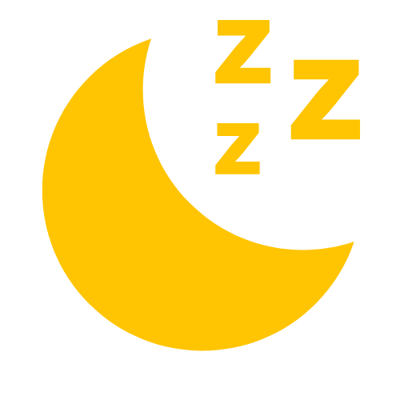

Worry Dolls (Muñeca
quitapena) are tiny, hand-made dolls
from Guatemala that serve an important purpose.
Before going to bed each night, you can tell your worries to them before placing them under your pillow.
And then you don't have to worry about those worries anymore, and you can sleep more soundly.
Legend has it that before morning, the dolls will gift you the wisdom and knowledge to eliminate your worries.
Wait, you don't happen to have any worry dolls? Well, here are some virtual worry dolls.
Choose a Doll:
988 Suicide & Crisis Lifeline The Lifeline provides 24-hour, confidential support to anyone in suicidal crisis or emotional distress. Call or text to connect with a trained crisis counselor. Call or text 988; Llame al 988 (para ayuda en español) Or use Lifeline Chat online. Support is also available in English via live chat.
The history dates back to the Mayan culture.
The Mayan legend tells (according to the Mayan sacred book the Popol Vuh) that when their gods met to form the Mayan world, their attempt to create humanity was fruitless.
"The first men were formed of stone, but they were so hard that they could not move."
"In the second attempt they tried it with mud, but with the first rain the men fell apart."
The Mayan story goes on to say that their gods agreed: "May they be made of corn!" And so it was that Ixmucané emerged, the goddess of corn. She was in charge of creating Mayan men and women.
Post-Mayan culture folklore says that after a while, the Corn Goddess Ixmucané transformed to reincarnate into doll rocks to protect the corn men and women that she helped create.
That is why it is said that little dolls have the power to solve problems and concerns.
The classic way of using them is that children put them under their pillow at night, to take their worries away.
The purpose of these dolls is to help children of all ages with their worries by expressing themselves out loud. It's believed that for the worry dolls to work their magic, after the child has confessed their worries, they have to put the worry dolls under their pillow and go to sleep. In the morning all of their worries will be gone.